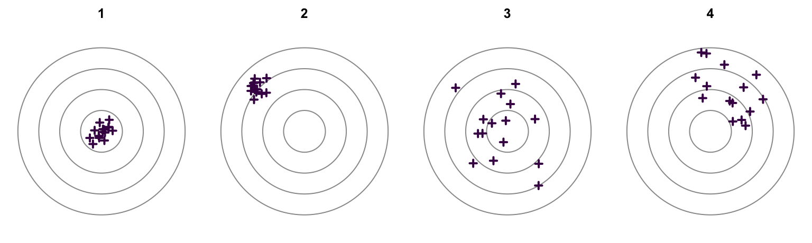

13 Gütekriterien II
WichtigWork in Progress
Dieses Kapitel wird derzeit intern überarbeitet. Aufgaben, Daten und Lösungen können sich noch ändern. Bitte bearbeiten Sie die Aufgaben erst, wenn die Überarbeitung abgeschlossen ist und dieser Hinweis entfernt wurde.
In diesem Kapitel berechnen und beurteilen Sie Kennwerte der drei Hauptgütekriterien: Objektivität (Cohens Kappa, Intraklassenkorrelation), Reliabilität (Testhalbierung, Testverlängerung, Cronbachs Alpha) und Validität (Konstruktvalidität). Die Formeln in den Hinweisen entsprechen der Formelsammlung zur Vorlesung. Alle Daten sind fiktiv.
Aufgabe 1 (Cohens Kappa) Die Polizei eines Bundeslandes wählt ihre Kommissaranwärter:innen in einem Assessment Center aus. In einem Rollenspiel muss jede Bewerber:in einen aufgebrachten Bürger beruhigen, dem gerade sein Fahrrad gestohlen wurde und der die Polizei für unfähig hält. Zwei Beobachter:innen, X und Y, verfolgen das Rollenspiel und entscheiden unabhängig voneinander, ob die Bewerber:in die Situation deeskaliert hat (bestanden) oder nicht (nicht bestanden). Tabelle 1 zeigt ihre Urteile für 25 Bewerber:innen.
| bestanden (Y) | nicht bestanden (Y) | |
|---|---|---|
| bestanden (X) | 11 | 3 |
| nicht bestanden (X) | 2 | 9 |
HinweisHinweis
\[ \kappa = \frac{p_0 - p_e}{1 - p_e}, \qquad \kappa_{max} = \frac{p_{0,r} - p_e}{1 - p_e} \]
\(p_{0,r}\) ist die Summe der jeweils kleineren Randanteile. Beurteilung von Kappa nach der Vorlesung: bis 0.40 ungenügend, 0.41 bis 0.60 befriedigend, 0.61 bis 0.80 gut, über 0.80 sehr gut.
- Welche Art der Objektivität prüfen Sie mit Cohens Kappa (Cohen, 1960)?
TippLösung
Die Auswertungsobjektivität (Interrater-Reliabilität) bei nominalskalierten Urteilen.
- Berechnen Sie Cohens Kappa und beurteilen Sie die Übereinstimmung der Beobachter:innen.
TippLösung
\(p_0 = 0.80\), \(p_e \approx 0.50\), \(\kappa = 0.60\): befriedigend.
- Wie hoch könnte Kappa bei diesen Randverteilungen höchstens sein?
TippLösung
\(p_{0,r} = 0.96\), \(\kappa_{max} = 0.92\)
Aufgabe 2 (Intraklassenkorrelation) Am zweiten Tag des Assessment Centers aus Aufgabe 1 bearbeiten sechs Bewerber:innen eine simulierte Einsatzlage: Ein Notruf meldet einen Verkehrsunfall mit Verletzten, und die Bewerber:in muss am Funk Kräfte anfordern, Prioritäten setzen und den Überblick behalten. Acht Beobachter:innen rotieren zwischen den Stationen; jede Bewerber:in wird deshalb von vier zufällig zugeteilten Beobachter:innen auf einer Skala von 1 (gar nicht) bis 10 (vollständig) danach bewertet, wie gut sie die Lage strukturiert. Ob sie weiterkommt, entscheidet der Mittelwert der vier Bewertungen.
| Bewerber:in | A | B | C | D | E | F | G | H |
|---|---|---|---|---|---|---|---|---|
| 1 | 8 | 6 | 8 | 7 | ||||
| 2 | 4 | 2 | 7 | 2 | ||||
| 3 | 10 | 4 | 7 | 7 | ||||
| 4 | 7 | 6 | 4 | 5 | ||||
| 5 | 3 | 1 | 1 | 3 | ||||
| 6 | 4 | 4 | 4 | 6 |
HinweisHinweis
\[ QS_{zw} = \sum_{j=1}^{J} n_j \cdot (\bar{x}_j - \bar{x})^2, \qquad QS_{inn} = \sum_{j=1}^{J} \sum_{m=1}^{n_j} (x_{mj} - \bar{x}_j)^2 \]
\[ \hat{\sigma}^2_{zw} = \frac{QS_{zw}}{J - 1}, \qquad \hat{\sigma}^2_{inn} = \frac{QS_{inn}}{n - J}, \qquad n = n_j \cdot J \]
\[ ICC(1,1) = \frac{\hat{\sigma}^2_{zw} - \hat{\sigma}^2_{inn}}{\hat{\sigma}^2_{zw} + (k - 1) \cdot \hat{\sigma}^2_{inn}}, \qquad ICC(1,k) = \frac{\hat{\sigma}^2_{zw} - \hat{\sigma}^2_{inn}}{\hat{\sigma}^2_{zw}} \]
Beurteilung des ICC nach der Vorlesung: unter 0.50 ungenügend, 0.50 bis 0.75 befriedigend, 0.76 bis 0.90 gut, über 0.90 sehr gut.
- Welcher Fall nach Shrout & Fleiss (1979) liegt vor, und welchen ICC-Koeffizienten verwenden Sie? Begründen Sie Ihre Antwort.
TippLösung
Fall 1, weil jede Bewerber:in von einem anderen, zufällig zugeteilten Set von Beobachter:innen bewertet wird. ICC(1,k), weil über das Weiterkommen der Mittelwert der vier Bewertungen entscheidet.
- Berechnen Sie die Quadratsumme \(QS_{inn}\) für die erste Bewerber:in und bestimmen Sie \(n\).
TippLösung
\(QS_{inn} = 2.75\) (Mittelwert 7.25), \(n = 24\)
- Für alle sechs Bewerber:innen gilt \(QS_{inn} = 49.5\) und \(QS_{zw} = 80.5\). Berechnen Sie den ICC aus Teil a und beurteilen Sie ihn.
TippLösung
\(\hat{\sigma}^2_{zw} = 16.10\), \(\hat{\sigma}^2_{inn} = 2.75\), \(ICC(1,k) = 0.83\): gut.
- Wie reliabel ist das Urteil einer einzelnen Beobachter:in? Berechnen Sie ICC(1,1) und vergleichen Sie mit Teil c.
TippLösung
\(ICC(1,1) = 0.55\): befriedigend. Ein einzelnes Urteil ist deutlich weniger reliabel als der Mittelwert aus vier Urteilen.
Aufgabe 3 (Reliabilität und Validität) Die Abbildung zeigt vier Zielscheiben. Jedes Kreuz steht für eine Messung; die Mitte steht für das Merkmal, das gemessen werden soll.
- Welche Zielscheibe zeigt eine reliable und valide Messung, welche eine reliable, aber nicht valide, und welche eine Messung, die weder reliabel noch valide ist?
TippLösung
- 1: reliabel und valide.
- 2: reliabel, aber nicht valide: Die Messungen liegen eng beieinander, verfehlen aber das Merkmal systematisch.
- 3: nicht reliabel: Die Messungen streuen stark, liegen aber im Mittel auf dem Ziel.
- 4: weder reliabel noch valide.
- Kann eine Messung wie in Zielscheibe 3 valide sein?
TippLösung
Nur eingeschränkt: Die Reliabilität begrenzt die Validität. Zielscheibe 3 trifft nur im Mittel; einzelne Messungen liegen oft weit vom Ziel entfernt.
Aufgabe 4 (Testhalbierung) Die Forscher:innen aus Kapitel 10 kürzen ihr Screening für Extraversion nach der Itemanalyse auf vier Items. In einer neuen Stichprobe teilen sie die Items in zwei Testhälften auf (Items 1 und 3, Items 2 und 4). Die Summenwerte der beiden Hälften korrelieren zu 0.81.
HinweisHinweis
\[ Rel(x_{\text{vollständig}}) = \frac{2 \cdot Corr(x_p, x_q)}{1 + Corr(x_p, x_q)} = \frac{2 \cdot Rel(x_{\text{halb}})}{1 + Rel(x_{\text{halb}})} \]
- Warum reicht die Korrelation der beiden Testhälften nicht als Schätzung der Reliabilität des Screenings?
TippLösung
Sie schätzt die Reliabilität eines Tests mit nur halb so vielen Items. Weil die Reliabilität mit der Testlänge steigt, muss sie auf die volle Länge aufgewertet werden.
- Schätzen Sie die Reliabilität des vollständigen Screenings mit der Spearman-Brown-Formel.
TippLösung
\(Rel(x_{\text{vollständig}}) = 0.90\)
Aufgabe 5 (Testverlängerung) Für Einzelfallentscheidungen möchten die Forscher:innen aus Aufgabe 4 eine Reliabilität von 0.95 erreichen. Gehen Sie von der Reliabilität 0.90 des Screenings mit vier Items aus.
HinweisHinweis
\[ Rel^*_k = \frac{k \cdot Rel}{1 + (k - 1) \cdot Rel}, \qquad k = \frac{Rel^* \cdot (1 - Rel)}{Rel \cdot (1 - Rel^*)} \]
- Um welchen Faktor müssen die Forscher:innen das Screening verlängern?
TippLösung
\(k = 2.11\)
- Wie viele Items braucht das Screening dann insgesamt, und wie viele kommen hinzu?
TippLösung
\(4 \cdot 2.11 = 8.44\), aufgerundet 9 Items: 5 Items kommen hinzu. Mit 8 Items bliebe die Reliabilität knapp unter 0.95.
- Welche Annahme trifft die Spearman-Brown-Formel über die neuen Items?
TippLösung
Die neuen Items sind zu den vorhandenen parallel, messen also dasselbe Merkmal gleich gut.
Aufgabe 6 (Cronbachs Alpha) In derselben Stichprobe wie in Aufgabe 4 haben die vier Items die Varianzen \(Var(x_1) = 1.64\), \(Var(x_2) = 2.70\), \(Var(x_3) = 1.14\) und \(Var(x_4) = 1.07\). Die Varianz des Summenwerts beträgt \(Var(x) = 18.41\).
HinweisHinweis
\[ Rel(x) = \alpha = \frac{m}{m - 1} \cdot \left(1 - \frac{\sum_{j=1}^{m} Var(x_j)}{Var(x)}\right) \]
Faustregeln nach der Vorlesung: Bei Leistungstests in der Einzelfalldiagnostik sollte die Reliabilität über 0.90 liegen, bei Persönlichkeitsfragebögen gelten Werte über 0.80 als gut, bei Screenings reichen oft schon Werte über 0.70.
- Berechnen Sie Cronbachs Alpha (Cronbach, 1951) für die vier Items.
TippLösung
\(\alpha = 0.86\)
- Beurteilen Sie den Wert.
TippLösung
Gut: Für einen Persönlichkeitsfragebogen liegt der Wert über 0.80, für ein Screening deutlich über 0.70.
- Unter welchen Voraussetzungen schätzt Cronbachs Alpha die Reliabilität korrekt?
TippLösung
Die Items müssen essenziell tau-äquivalent sein und dasselbe Merkmal messen (Eindimensionalität).
- Warum weicht Cronbachs Alpha von der Schätzung aus Aufgabe 4 ab?
TippLösung
Die Testhalbierungsreliabilität hängt davon ab, wie die Items auf die beiden Hälften verteilt werden. Cronbachs Alpha behandelt dagegen jedes Item als eigenen Testteil.
Aufgabe 7 (Messmodelle) Ein Test mit drei Items liegt in fünf Versionen vor. Die Tabellen zeigen für jede Version die Mittelwerte der Items und darunter ihre Kovarianzmatrix: Varianzen auf der Diagonalen, Kovarianzen darunter. Jede Version entspricht genau einem der fünf Messmodelle aus der Vorlesung.
HinweisHinweis
Prüfen Sie für jede Version nacheinander: Sind die Kovarianzen gleich? Sind die Varianzen gleich? Sind die Mittelwerte gleich?
- Welches Messmodell liegt in Version A vor? Begründen Sie Ihre Antwort.
| \(x_1\) | \(x_2\) | \(x_3\) | |
|---|---|---|---|
| Mittelwert | 4.30 | 4.30 | 4.30 |
| \(x_1\) | 0.95 | ||
| \(x_2\) | 0.45 | 0.55 | |
| \(x_3\) | 0.45 | 0.45 | 0.80 |
TippLösung
Tau-äquivalent: gleiche Mittelwerte und Kovarianzen, unterschiedliche Varianzen.
- Welches Messmodell liegt in Version B vor? Begründen Sie Ihre Antwort.
| \(x_1\) | \(x_2\) | \(x_3\) | |
|---|---|---|---|
| Mittelwert | 3.00 | 1.90 | 2.60 |
| \(x_1\) | 0.91 | ||
| \(x_2\) | 0.48 | 0.79 | |
| \(x_3\) | 0.24 | 0.32 | 0.61 |
TippLösung
Tau-kongenerisch: unterschiedliche Kovarianzen.
- Welches Messmodell liegt in Version C vor? Begründen Sie Ihre Antwort.
| \(x_1\) | \(x_2\) | \(x_3\) | |
|---|---|---|---|
| Mittelwert | 2.60 | 2.60 | 2.60 |
| \(x_1\) | 0.80 | ||
| \(x_2\) | 0.55 | 0.80 | |
| \(x_3\) | 0.55 | 0.55 | 0.80 |
TippLösung
Parallel: gleiche Mittelwerte, Varianzen und Kovarianzen.
- Welches Messmodell liegt in Version D vor? Begründen Sie Ihre Antwort.
| \(x_1\) | \(x_2\) | \(x_3\) | |
|---|---|---|---|
| Mittelwert | 3.20 | 4.40 | 1.60 |
| \(x_1\) | 0.70 | ||
| \(x_2\) | 0.40 | 0.85 | |
| \(x_3\) | 0.40 | 0.40 | 1.00 |
TippLösung
Essenziell tau-äquivalent: gleiche Kovarianzen, unterschiedliche Mittelwerte und Varianzen.
- Welches Messmodell liegt in Version E vor? Begründen Sie Ihre Antwort.
| \(x_1\) | \(x_2\) | \(x_3\) | |
|---|---|---|---|
| Mittelwert | 2.60 | 1.70 | 4.40 |
| \(x_1\) | 0.70 | ||
| \(x_2\) | 0.45 | 0.70 | |
| \(x_3\) | 0.45 | 0.45 | 0.70 |
TippLösung
Essenziell parallel: gleiche Varianzen und Kovarianzen, unterschiedliche Mittelwerte.
- Berechnen Sie Cronbachs Alpha für die Version, in der das essenziell tau-äquivalente Messmodell gilt.
HinweisHinweis
Die Varianz des Summenwerts ist die Summe aller Einträge der vollständigen Kovarianzmatrix, also aller Varianzen und jeder Kovarianz zweimal:
\[ Var(x) = \sum_{j=1}^{m} Var(x_j) + 2 \cdot \sum_{j < k} Cov(x_j, x_k) \]
Die Formel für Cronbachs Alpha steht im Hinweis zu Aufgabe 6.
TippLösung
Version D: \(Var(x) = 4.95\), \(\alpha = 0.73\)
- Für welche Versionen schätzt Cronbachs Alpha die Reliabilität korrekt? Was gilt für die übrigen?
TippLösung
Für A, C, D und E, weil sie mindestens essenziell tau-äquivalent sind. In Version B (tau-kongenerisch) unterschätzt Cronbachs Alpha die Reliabilität; dort eignen sich andere Koeffizienten, z. B. McDonalds Omega.
HinweisHinweis
Wenn Sie das Erkennen von Messmodellen weiter üben möchten, starten Sie in R das Quiz irtea::play_roulette(). Es zeigt in jeder Runde neue Mittelwerte und Kovarianzmatrizen und gibt Ihnen nach jeder Antwort eine Rückmeldung. Installation und weitere Optionen finden Sie auf der Seite R-Paket.
Aufgabe 8 (Konstruktvalidität) Forscher:innen der RPTU haben einen sprachfreien Intelligenztest entwickelt, den RPTU-IQ, und wollen ihn validieren. In einer Pilotstudie mit Studierenden in Landau erheben sie zusätzlich den Intelligenz-Struktur-Test 2000 R (I-S-T 2000 R, Liepmann et al., 2007), der auch sprachliche Aufgaben enthält, und den sprachfreien Hagen Matrices Test (HMT, Heydasch, 2014). Außerdem erfragen sie die Abiturnote, die Deutschnote im Abitur und ob eine Lese-Rechtschreib-Störung (LRS) diagnostiziert wurde (0 = nein, 1 = ja).
HinweisHinweis
Bei Schulnoten stehen kleine Zahlen für gute Leistungen.
- Mit welchen Variablen erwarten Sie einen positiven, mit welchen einen negativen und mit welchen keinen Zusammenhang mit dem RPTU-IQ? Begründen Sie Ihre Antwort.
TippLösung
- Positiv: I-S-T 2000 R und HMT, weil beide Intelligenz messen.
- Negativ: Abiturnote, weil Intelligenz mit guten, also kleinen Noten einhergeht.
- Kein Zusammenhang: LRS, weil sie eine umschriebene Störung ist, die nicht durch geringe Intelligenz erklärt wird.
- Deutschnote: höchstens ein schwach negativer Zusammenhang, weil ein sprachfreier Test sprachliche Fähigkeiten kaum erfassen sollte.
- Welche Variablen prüfen die konvergente, welche die diskriminante Validität? Welche Variable ist ein Kriterium?
TippLösung
Konvergent: I-S-T 2000 R und HMT. Diskriminant: LRS und Deutschnote. Kriterium: Abiturnote; weil das Abitur vor dem Test lag, geht es um retrospektive Validität.
- Tabelle 3 zeigt die Korrelationen in der Pilotstudie. Entsprechen sie Ihren Erwartungen? Wie interpretieren Sie Abweichungen?
| RPTU-IQ | I-S-T 2000 R | Abiturnote | HMT | LRS | Deutschnote | |
|---|---|---|---|---|---|---|
| RPTU-IQ | 1 | |||||
| I-S-T 2000 R | 0.67 | 1 | ||||
| Abiturnote | −0.45 | −0.56 | 1 | |||
| HMT | 0.74 | 0.71 | −0.68 | 1 | ||
| LRS | −0.09 | −0.12 | 0.14 | 0.05 | 1 | |
| Deutschnote | −0.41 | −0.44 | 0.43 | −0.18 | 0.31 | 1 |
TippLösung
Weitgehend: HMT (0.74) und I-S-T 2000 R (0.67) korrelieren hoch mit dem RPTU-IQ, die Abiturnote negativ (−0.45) und die LRS kaum (−0.09). Die Deutschnote weicht ab: Sie korreliert mit dem RPTU-IQ (−0.41) etwa so stark wie mit dem I-S-T 2000 R (−0.44), der sprachliche Aufgaben enthält, aber deutlich stärker als mit dem sprachfreien HMT (−0.18). Der RPTU-IQ ist womöglich weniger sprachfrei als beabsichtigt, etwa durch schriftliche Instruktionen; das schwächt seine diskriminante Validität.
- Die Pilotstichprobe bestand aus Studierenden. Was bedeutet das für die Korrelationen?
TippLösung
Studierende haben alle ein Abitur und streuen in der Intelligenz weniger als die Allgemeinbevölkerung. Die eingeschränkte Streuung schwächt die Korrelationen, und die Ergebnisse lassen sich nicht ohne Weiteres auf andere Gruppen übertragen.
Literatur
Cohen, J. (1960). A coefficient of agreement for nominal scales. Educational and Psychological Measurement, 20(1), 37–46. https://doi.org/10.1177/001316446002000104
Cronbach, L. J. (1951). Coefficient alpha and the internal structure of tests. Psychometrika, 16(3), 297–334. https://doi.org/10.1007/BF02310555
Heydasch, T. (2014). The Hagen Matrices Test (HMT). FernUniversität in Hagen. https://doi.org/10.13140/RG.2.2.31433.75361
Liepmann, D., Beauducel, A., Brocke, B., & Amthauer, R. (2007). Intelligenz-Struktur-Test 2000 R (I-S-T 2000 R) (2. Aufl.). Hogrefe.
Shrout, P. E., & Fleiss, J. L. (1979). Intraclass correlations: Uses in assessing rater reliability. Psychological Bulletin, 86(2), 420–428. https://doi.org/10.1037/0033-2909.86.2.420